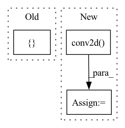

Pattern ID :1502

Before Change
n_channels = smap.shape[0]
kernel = torch.tensor([[0., 1., 0.],
[1., -4., 1.],
[0., 1., 0.]])
kernel = kernel.view(1, 1, 3, 3).repeat(1, n_channels, 1, 1)
smooth_feat = torch.sum(torch.abs(F.conv2d(smap, kernel)))
After Change
def cal_explanation_feature(self, saliency_maps: torch.Tensor) -> float:
sparse_feats = saliency_maps.flatten(start_dim=1).norm(p=1) // (N)
smooth_feats = self.conv2d(saliency_maps).flatten(start_dim=1).norm(p=1) // (N)
persist_feats = 0.0 // todo (N)
exp_feats = self.lambd_sp * sparse_feats + self.lambd_sm * smooth_feats + self.lambd_pe * persist_feats
return exp_feats.median()
In pattern: SUPERPATTERN
Frequency: 4
Non-data size: 3
Instances
Fragment ID: 6797380
Project Name: ain-soph/trojanzoo
Commit Name: afe7bbd2d2e9f901ee8cf56c3b9320b9272a81af
Time: 2020-07-22
Author: ain-soph@live.com
File Name: trojanzoo/defense/backdoor/neuron_inspect.py
M Class Name: Neuron_Inspect
N Class Name: Neuron_Inspect
M Method Name: cal_explanation_feature(2)
N Method Name: cal_explanation_feature(2)
M Parent Class: Defense_Backdoor
N Parent Class: Defense_Backdoor
M File Name: trojanzoo/defense/backdoor/neuron_inspect.py
N File Name: trojanzoo/defense/backdoor/neuron_inspect.py
M Start Line: 68
M End Line: 84
N Start Line: 68
N End Line: 73
'>
Before Change
self.integrate_model(working_image, self.integrate_window(working_image, "center"), self.integrate_recursion_depth)
// Convolve the PSF
LL = _shift_Lanczos_kernel_torch(-center_shift[0]/working_image.pixelscale, -center_shift[1]/working_image.pixelscale, 10, AP_config.ap_dtype, AP_config.ap_device)
working_image.data = fft_convolve_multi_torch(working_image.data, [self.target.psf, LL], img_prepadded = True) //fft_convolve_torch(working_image.data, self.target.psf, img_prepadded = True)
// Shift image back to align with original pixel grid
working_image.window.shift_origin(-center_shift)
// Add the sampled/integrated/convolved pixels to the requested image
After Change
self.integrate_model(working_image, self.integrate_window(working_image, "center"), self.integrate_recursion_depth)
// Convolve the PSF
LL = _shift_Lanczos_kernel_torch(-center_shift[0]/working_image.pixelscale, -center_shift[1]/working_image.pixelscale, 3, AP_config.ap_dtype, AP_config.ap_device)
shift_psf = torch.nn.functional.conv2d(self.target.psf.view(1,1,*self.target.psf.shape), LL.view(1,1,*LL.shape), padding = "same")[0][0]
working_image.data = fft_convolve_torch(working_image.data, shift_psf/torch.sum(shift_psf), img_prepadded = True)
// Shift image back to align with original pixel grid
working_image.window.shift_origin(-center_shift)
'>
Fragment ID: 6797396
Project Name: connorstoneastro/autoprof
Commit Name: a0ad8000781a5d54daec1ff2d1051f727c29dd36
Time: 2023-01-11
Author: connorstone628@gmail.com
File Name: build/lib/autoprof/models/model_object.py
M Class Name: BaseModel
N Class Name: BaseModel
M Method Name: sample(3)
N Method Name: sample(3)
M Parent Class: AutoProf_Model
N Parent Class: AutoProf_Model
M File Name: build/lib/autoprof/models/model_object.py
N File Name: build/lib/autoprof/models/model_object.py
M Start Line: 168
M End Line: 178
N Start Line: 168
N End Line: 179
'>
Before Change
self.integrate_model(working_image, self.integrate_window(working_image, "center"), self.integrate_recursion_depth)
// Convolve the PSF
LL = _shift_Lanczos_kernel_torch(-center_shift[0]/working_image.pixelscale, -center_shift[1]/working_image.pixelscale, 10, AP_config.ap_dtype, AP_config.ap_device)
working_image.data = fft_convolve_multi_torch(working_image.data, [self.target.psf, LL], img_prepadded = True) //fft_convolve_torch(working_image.data, self.target.psf, img_prepadded = True)
// Shift image back to align with original pixel grid
working_image.window.shift_origin(-center_shift)
// Add the sampled/integrated/convolved pixels to the requested image
After Change
self.integrate_model(working_image, self.integrate_window(working_image, "center"), self.integrate_recursion_depth)
// Convolve the PSF
LL = _shift_Lanczos_kernel_torch(-center_shift[0]/working_image.pixelscale, -center_shift[1]/working_image.pixelscale, 3, AP_config.ap_dtype, AP_config.ap_device)
shift_psf = torch.nn.functional.conv2d(self.target.psf.view(1,1,*self.target.psf.shape), LL.view(1,1,*LL.shape), padding = "same")[0][0]
working_image.data = fft_convolve_torch(working_image.data, shift_psf/torch.sum(shift_psf), img_prepadded = True)
// Shift image back to align with original pixel grid
working_image.window.shift_origin(-center_shift)
'>
Fragment ID: 6797395
Project Name: connorstoneastro/autoprof
Commit Name: c470a85d1d5174a01e42cea82ad90447d70035d5
Time: 2023-01-11
Author: connorstone628@gmail.com
File Name: autoprof/models/model_object.py
M Class Name: BaseModel
N Class Name: BaseModel
M Method Name: sample(3)
N Method Name: sample(3)
M Parent Class: AutoProf_Model
N Parent Class: AutoProf_Model
M File Name: autoprof/models/model_object.py
N File Name: autoprof/models/model_object.py
M Start Line: 171
M End Line: 178
N Start Line: 171
N End Line: 179
'>
Before Change
batch_list = {
"k4e": [],
"v4e": [],
"r3e": [],
"r2e": [],
"key": [],
"value": [],
After Change
_r4t, _, _, _, _ = self.encoder_query(target_objects[i])
// print(_r4t.shape) // torch.Size([n_objects, 1024, 7, 7])
_correlation_r4 = F.conv2d(r4[i].unsqueeze(dim=0), _r4t, padding=3).permute(1, 0, 2, 3)
// print(_correlation_r4.shape) // torch.Size([n_objects, 1, 30, 57])
k4, v4 = self.kv_query(torch.cat([_r4e, _correlation_r4], dim=1))
// print(k4.shape) // torch.Size([n_objects, 128, 30, 57])
'>
Fragment ID: 6797389
Project Name: hzxie/rmnet
Commit Name: 69815437b1b170901900d8efd3933ae5b815c928
Time: 2020-04-28
Author: root@haozhexie.com
File Name: models/stm.py
M Class Name: STM
N Class Name: STM
M Method Name: segment(6)
N Method Name: segment(5)
M Parent Class: torch.nn.Module
N Parent Class: torch.nn.Module
M File Name: models/stm.py
N File Name: models/stm.py
M Start Line: 288
M End Line: 312
N Start Line: 278
N End Line: 317